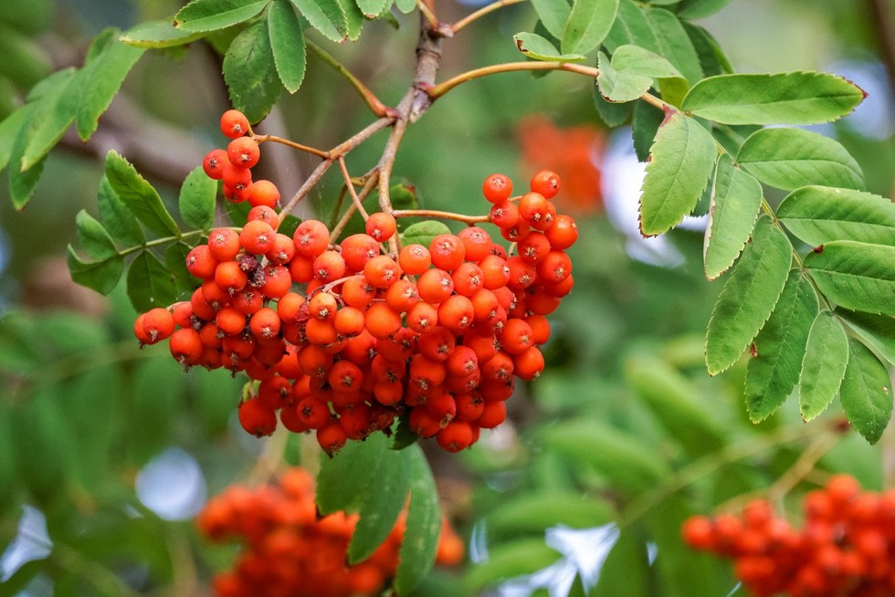
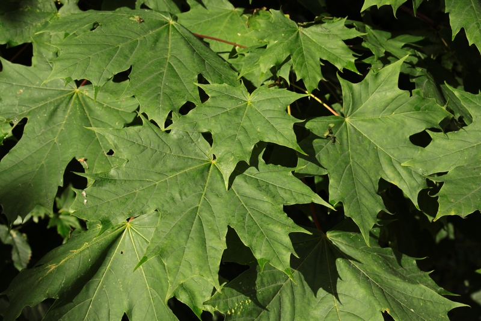
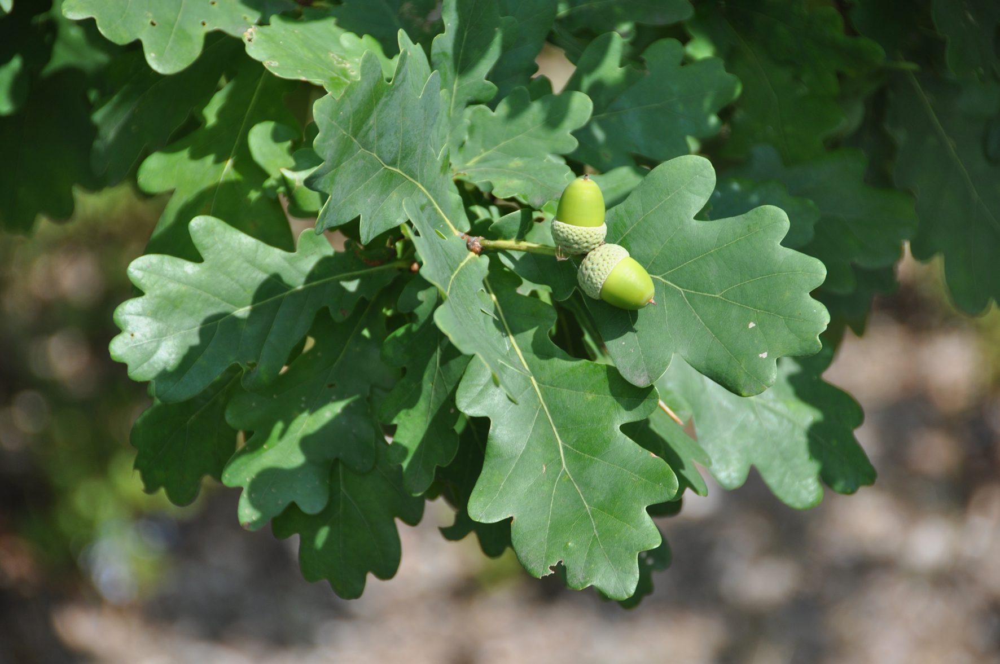
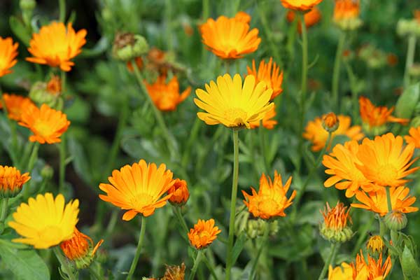
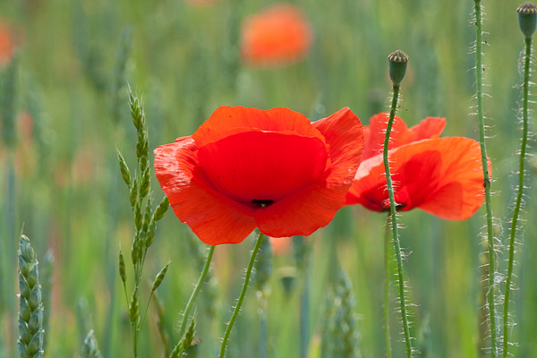
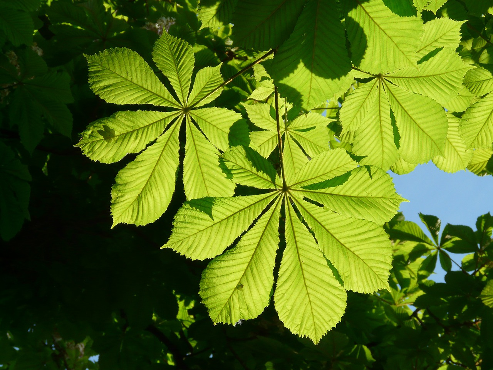

Jarzębina
Jarzębina była uznawana za roślinę ochronną i przypisywano jej moc odpędzania złych duchów oraz piorunów. Jej gałązki umieszczano przy domach i wejściach, aby chronić mieszkańców.


Jarzębina była uznawana za roślinę ochronną i przypisywano jej moc odpędzania złych duchów oraz piorunów. Jej gałązki umieszczano przy domach i wejściach, aby chronić mieszkańców.

Klon symbolizował szczęście, powodzenie i opiekę, a w polskiej tradycji wiązano go również z zakochanymi. W dawnych wierzeniach miał chronić zarówno żywych, jak i zmarłych.


Dąb stanowi powszechny symbol wytrzymałości, siły oraz postawy, która kojarzona jest z królami i bóstwami. Dzięki swojej długowieczności roślina ta stała się znakiem jedności rodziny, mądrości oraz moralności. Symbolika tego drzewa obejmuje również przemyślane wykorzystanie wiedzy oraz pełnienie ważnej roli w podtrzymywaniu życia.


Nagietek swoim kształtem i kolorem nawiązuje do słońca, będąc jednocześnie symbolem radości, jak i głębokiego smutku czy pamięci o zmarłych. W wielu kulturach kwiat ten wyraża aspiracje do bogactwa, ale służył również jako święta ofiara, niosąc w sobie silną symbolikę duchową.


Mak jest powszechnym symbolem domu jednoczącego bliskich, a dzięki swoim właściwościom uspokajającym od starożytności kojarzono go ze snem, regeneracją i wizjami. W tradycji europejskiej stał się kwiatem pamięci o poległych, symbolizując jednocześnie luksus, sukces oraz nadzieję na zmartwychwstanie i życie wieczne.


Kasztanowiec uznawany jest za symbol piękna, sztuki oraz domowego ciepła, a jego cień ma zapewniać szczęście i dobre samopoczucie. Od średniowiecza wierzono w jego ochronną moc – uważano, że owoce kasztanowca potrafią wyciągać negatywną energię, odpędzać zło z domostw oraz chronić przed szkodliwym promieniowaniem.
